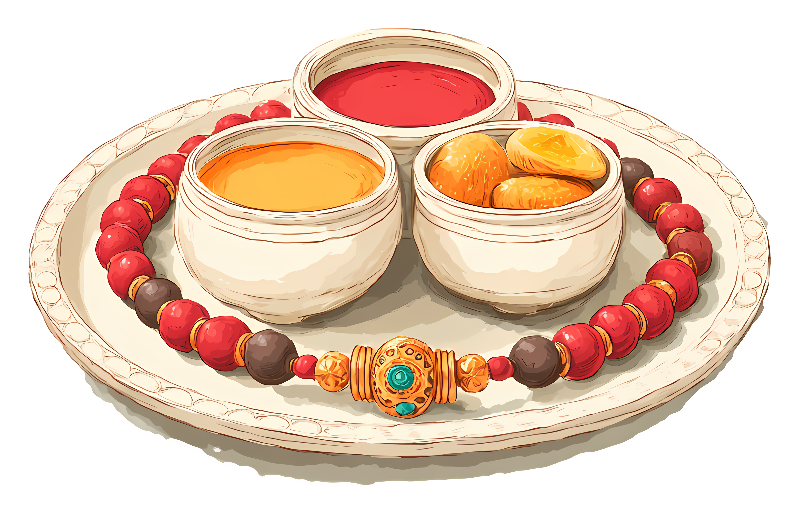
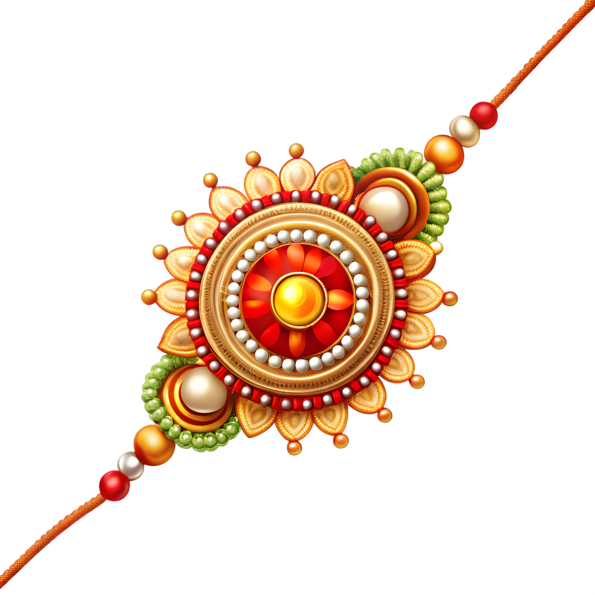
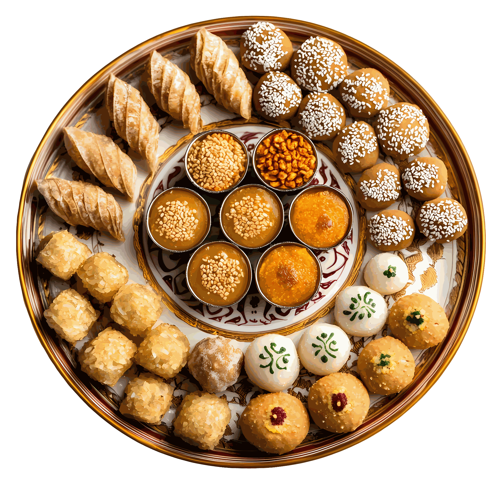

✨ Happy Raksha Bandhan ✨



The Story Behind Rakhi 🧵✨
Long ago, during a great war between the Devas and the Asuras ⚔️, Lord Indra, the king of the heavens, was facing defeat. The battle had grown fierce and endless, and the Devas were slowly losing their strength and hope. 😔
Seeing her husband so troubled, his wife Indrani (Shachi Devi) could not bear to watch him suffer. She turned to prayer 🙏, asking for his safety and his victory. On the sacred day of Shravana Purnima 🌕, she took a simple thread and blessed it with prayers and sacred mantras, filling it with all her love and hope. With trembling hands and a full heart, she gently tied it around Indra's wrist. 🎗️
Carrying those blessings with him, Indra returned to the battlefield with renewed courage 💪 — and this time, he triumphed over the Asuras. From that day, this humble thread came to be known as the Raksha Sutra — a thread of protection, born from love. 🕊️
Over the centuries, the meaning of this thread grew into something even more beautiful. It stopped being just a symbol tied for war and became a quiet promise exchanged between people who deeply care for one another —
So when a sister ties a rakhi on her brother's wrist today 🧕🤝👦, it isn't just a colorful thread wound around skin. It carries her love, her prayers, her worries, and her wishes for his happiness and safety, all woven into a few strands of silk. 🧵❤️
And when a brother gives something in return 🎁, it isn't just a gift. It's his silent promise: no matter how much life changes — how far apart they grow, how busy the world makes them — she will always have him by her side. 🌟
So this Rakhi isn't just a festival tradition. 🎉
It's a small thread carrying a very big promise. 🧡🪢
రాఖీ వెనుక ఉన్న కథ 🧵✨
చాలా కాలం క్రితం, దేవతలకు మరియు రాక్షసులకు మధ్య జరిగిన ఒక గొప్ప యుద్ధంలో ⚔️, దేవతల రాజైన ఇంద్రుడు ఓటమిని ఎదుర్కొంటున్నాడు. యుద్ధం మరింత తీవ్రంగా మారి, దేవతలు క్రమంగా తమ శక్తిని, ధైర్యాన్ని కోల్పోతున్నారు. 😔
తన భర్త అంత కష్టంలో ఉండటం చూసి, అతని భార్య ఇంద్రాణి (శచీదేవి) తట్టుకోలేకపోయింది. ఆమె ప్రార్థనతో 🙏 అతని క్షేమం కోసం, విజయం కోసం వేడుకుంది. పవిత్రమైన శ్రావణ పౌర్ణమి 🌕 రోజున, ఆమె ఒక సాధారణ దారాన్ని తీసుకొని, పవిత్ర మంత్రాలతో, ప్రార్థనలతో ఆశీర్వదించి, తన ప్రేమను, ఆశను ఆ దారంలో నింపింది. నిండైన హృదయంతో, ఆమె దానిని ఇంద్రుడి మణికట్టుకు కట్టింది. 🎗️
ఆ ఆశీర్వాదాలతో, ఇంద్రుడు కొత్త ధైర్యంతో యుద్ధభూమికి తిరిగి వెళ్ళాడు 💪 — ఈసారి రాక్షసులపై విజయం సాధించాడు. ఆనాటి నుంచి, ఈ చిన్న దారం రక్షా సూత్రం అని పిలవబడింది — ప్రేమ నుండి పుట్టిన రక్షణ దారం. 🕊️
కాలక్రమేణా, ఈ దారం అర్థం మరింత అందంగా మారింది. ఇది కేవలం యుద్ధం కోసం కట్టే గుర్తుగా మిగలకుండా, ఒకరిపై ఒకరికి ఉన్న ప్రేమను తెలియజేసే ఒక నిశ్శబ్ద వాగ్దానంగా మారింది —
అందుకే ఈరోజు ఒక చెల్లి తన అన్న లేదా తమ్ముడి మణికట్టుకు రాఖీ కడుతున్నప్పుడు 🧕🤝👦, అది కేవలం రంగుల దారం కాదు. అది ఆమె ప్రేమను, ప్రార్థనలను, ఆందోళనలను, అతని క్షేమం కోసం ఆమె కోరికలను ఆ పట్టు దారంలో అల్లుతుంది. 🧵❤️
మరి అన్న లేదా తమ్ముడు తిరిగి ఏదైనా ఇచ్చినప్పుడు 🎁, అది కేవలం బహుమతి కాదు. అది అతని నిశ్శబ్ద వాగ్దానం: జీవితం ఎంత మారినా — ఎంత దూరమైనా, ఎంత బిజీగా ఉన్నా — ఆమెకు ఎప్పుడూ తనే తోడుగా ఉంటాడని. 🌟
కాబట్టి ఈ రాఖీ కేవలం ఒక పండగ సంప్రదాయం కాదు. 🎉
ఇది ఒక చిన్న దారం మోసుకెళ్ళే చాలా పెద్ద వాగ్దానం. 🧡🪢